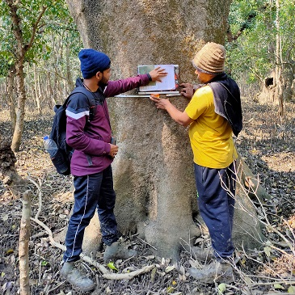
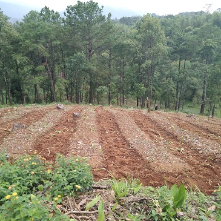

Bhitarkanika
is a mangrove dominated wetland in Odisha, India, covering an area of 650 sqkm (251 sq miles) in the Brahmani and Baitarani river deltas. In this area, we are doing research on Above Ground Biomass, LAI, PAR and Leaf Chlorophyll.

North East India
In the seven states of North East India, we mapping and monitoring for shiftnig cultivation (Jhum).